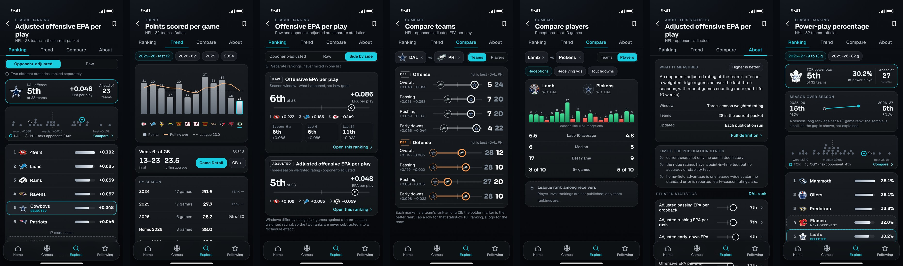
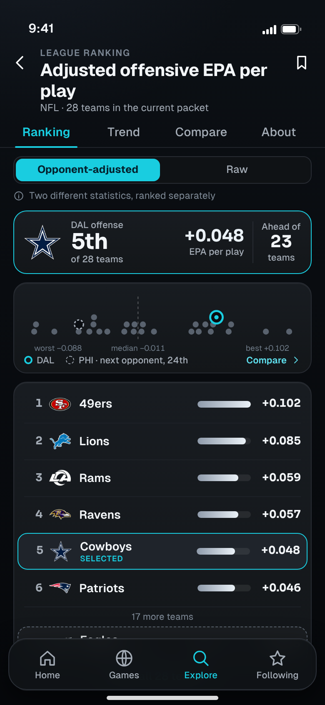
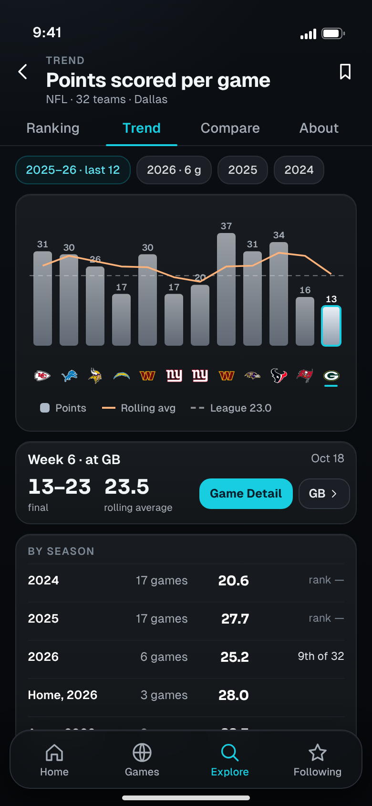
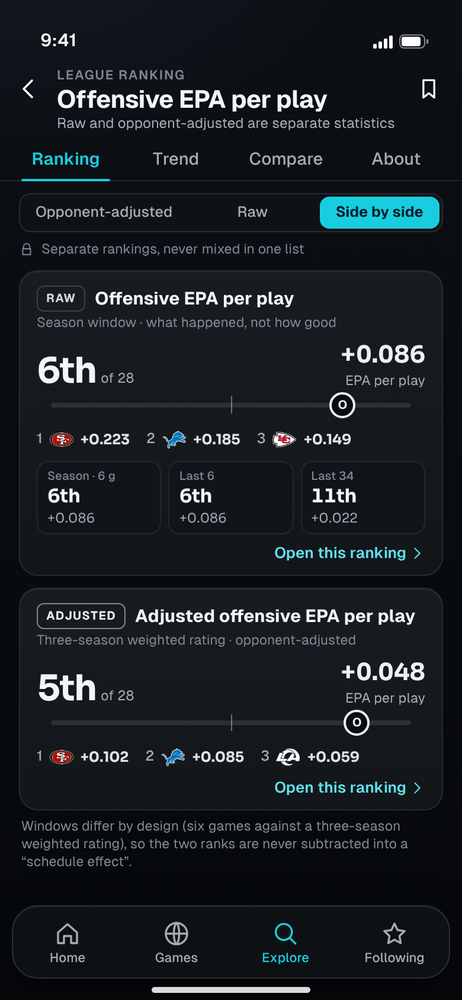
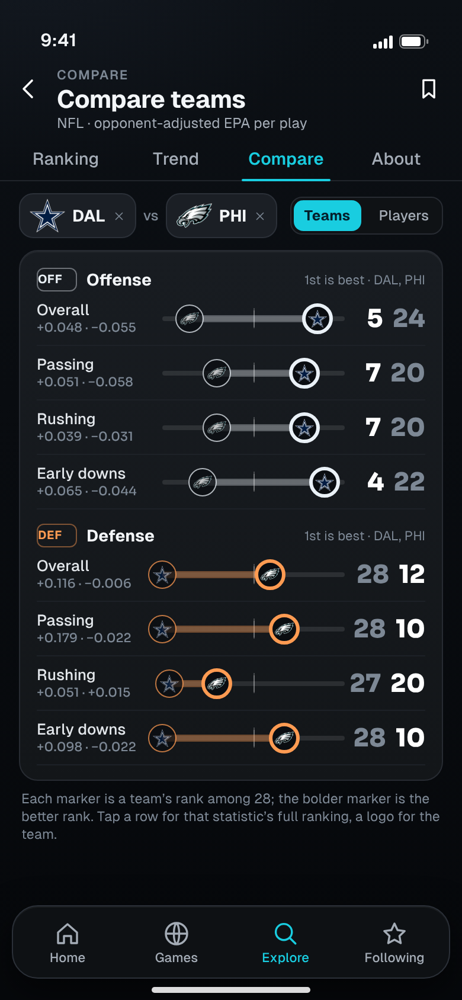
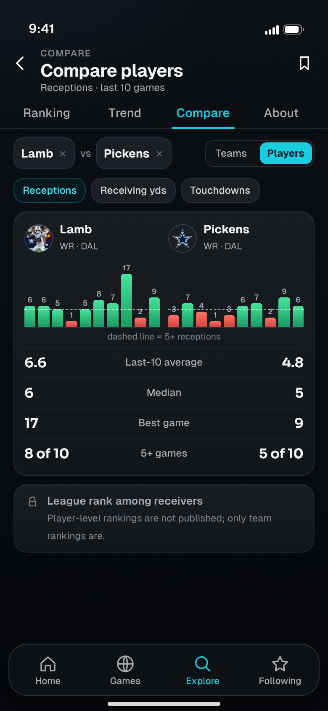
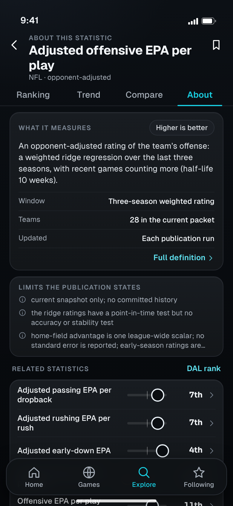
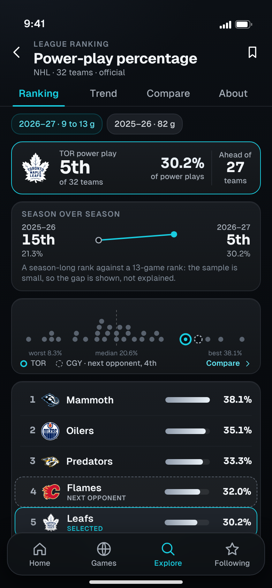

<title>SIFT Stat Detail</title>
<meta name="claude:viewport-fit-sides" content="cover">
<link rel="stylesheet" href="https://fonts.googleapis.com/css2?family=Geist:wght@400;500;600;700&family=Sora:wght@600;700&display=swap">
<style>
  :root { color-scheme: dark; --bg:#080b10; --bg2:#0e1216; --panel:#16191e; --line:#272b32; --line2:#39414b; --cyan:#19cde0; --text:#f3f6f9; --muted:#a4acb6; --dim:#7d8895; --mkt:#93a9ff; --built:#3fd98f; --wire:#f5bd5b; --new:#ff6f91;
    --ui:'Geist',-apple-system,'SF Pro Text','Helvetica Neue',Arial,sans-serif; --num:'Sora','Geist',-apple-system,Arial,sans-serif; }
  * { box-sizing: border-box; }
  body { background: radial-gradient(110% 30% at 8% -4%, rgba(72,88,116,.13), transparent 62%), linear-gradient(180deg,#0c1015,#090c10 40%,#06080b); color: var(--text); font: 400 16px/1.55 var(--ui); padding-left: max(16px, env(safe-area-inset-left, 0px)); padding-right: max(16px, env(safe-area-inset-right, 0px)); padding-block: 28px 64px; -webkit-font-smoothing: antialiased; }
  main { max-width: 980px; margin: 0 auto; display: grid; gap: 44px; }
  h1 { font: 700 clamp(30px, 6vw, 46px)/1.08 var(--ui); letter-spacing: -.03em; text-wrap: balance; }
  h1 em { font-style: normal; color: var(--cyan); }
  h2 { font: 700 clamp(22px, 4vw, 28px)/1.2 var(--ui); letter-spacing: -.02em; text-wrap: balance; }
  h3 { font: 600 18px/1.3 var(--ui); letter-spacing: -.01em; }
  p { color: #c3c8ce; max-width: 66ch; } .dim { color: var(--dim); } .sm { font-size: 14px; }
  .eyebrow { font: 600 12px/1 var(--ui); letter-spacing: .1em; text-transform: uppercase; color: var(--cyan); }
  .tag { display: inline-block; font: 700 12px/1 var(--ui); letter-spacing: .06em; padding: 5px 8px; border-radius: 6px; color: #031523; }
  .tag.built { background: var(--built); } .tag.wire { background: var(--wire); } .tag.new { background: var(--new); }
  .hero { display: grid; gap: 14px; }
  .banner { display: flex; flex-wrap: wrap; gap: 8px 16px; padding: 12px 14px; border-radius: 14px; border: 1px solid var(--line); background: #11141a; font-size: 14px; color: var(--muted); }
  .banner b { color: var(--text); font-weight: 600; }
  .card { border-radius: 18px; border: 1px solid var(--line); background: linear-gradient(180deg, #181c21, #131619); padding: 18px; }
  .grid3 { display: grid; gap: 14px; grid-template-columns: repeat(auto-fit, minmax(220px, 1fr)); }
  .grid3 .card { display: grid; gap: 6px; align-content: start; } .grid3 .card p { font-size: 14.5px; }
  .lane { display: inline-flex; align-items: center; gap: 6px; font-weight: 600; }
  .lane i { width: 10px; height: 10px; display: inline-block; background: currentColor; border-radius: 3px; } .lane.h i { border-radius: 50%; background: transparent; border: 2.5px solid currentColor; } .lane.z i { transform: rotate(45deg); width: 9px; height: 9px; }
  .cmp { display: grid; gap: 14px; }
  .cmp img { width: 100%; height: auto; border-radius: 14px; border: 1px solid var(--line); display: block; }
  .cmp .cap { display: grid; grid-template-columns: repeat(3, 1fr); gap: 8px; font: 600 12px/1.2 var(--ui); letter-spacing: .08em; text-transform: uppercase; color: var(--dim); text-align: center; }
  ul.lost { display: grid; gap: 8px; padding-left: 20px; color: #c3c8ce; font-size: 15px; } ul.lost b { color: var(--text); font-weight: 600; }
  .screen { display: grid; gap: 22px; grid-template-columns: minmax(0, 390px) minmax(0, 1fr); align-items: start; }
  @media (max-width: 760px) { .screen { grid-template-columns: 1fr; } }
  .phone { position: relative; width: 100%; max-width: 390px; }
  .phone img { width: 100%; height: auto; display: block; border-radius: 26px; border: 1px solid var(--line); box-shadow: 0 18px 50px rgba(0,0,0,.5); }
  .toggle { margin-top: 10px; width: 100%; height: 44px; border-radius: 12px; border: 1px solid var(--line2); background: #1b1f25; color: var(--text); font: 600 14px var(--ui); cursor: pointer; }
  .toggle[aria-pressed='true'] { border-color: var(--cyan); color: var(--text); }
  .body { display: grid; gap: 14px; align-content: start; }
  .body h3 .id { font-family: var(--num); color: var(--cyan); margin-right: 8px; }
  .kv { display: grid; gap: 8px; } .kv div { display: grid; grid-template-columns: 112px 1fr; gap: 12px; font-size: 14.5px; } .kv dt { color: var(--dim); font-weight: 600; } .kv dd { color: #c3c8ce; }
  table { width: 100%; border-collapse: collapse; font-size: 14px; } th { text-align: left; font: 600 12px/1.2 var(--ui); letter-spacing: .08em; text-transform: uppercase; color: var(--dim); padding: 0 10px 10px 0; } td { padding: 10px 10px 10px 0; border-top: 1px solid #21252b; vertical-align: top; color: #cfe0ec; } td:first-child { color: var(--text); font-weight: 500; }
  .scroll { overflow-x: auto; -webkit-overflow-scrolling: touch; } .scroll table { min-width: 640px; }
  .sw { display: grid; gap: 8px; grid-template-columns: repeat(auto-fill, minmax(140px, 1fr)); } .sw div { border-radius: 12px; border: 1px solid rgba(255,255,255,.08); overflow: hidden; display: grid; font-size: 12.5px; } .sw i { display: block; height: 38px; } .sw span { padding: 7px 9px 8px; background: #101317; color: #c3c8ce; line-height: 1.3; } .sw span b { display: block; color: var(--text); font-weight: 600; font-size: 13px; }
  .cols2 { display: grid; gap: 14px; grid-template-columns: repeat(auto-fit, minmax(280px, 1fr)); } code { font: 13px ui-monospace, Menlo, monospace; color: #dfe4ea; }
  .ask { display: grid; gap: 10px; counter-reset: q; } .ask li { list-style: none; padding: 12px 14px; border-radius: 12px; border: 1px solid var(--line); background: #11141a; font-size: 15px; color: #c3c8ce; }
  .ask li b { color: var(--text); }
</style>

<main>
<header class="hero">
  <span class="eyebrow">Design review · design only · nothing here is built</span>
  <h1>Stat Detail and League Rankings, <em>one tap from research</em></h1>
  <p>Interactive league rankings with the selected team highlighted, trends with tappable observations, raw and opponent-adjusted statistics kept apart, team and player comparisons, definitions with the publication’s stated limits, and related statistics, in the locked ink and graphite system. Every rank, value and comparison opens the right deeper screen.</p>
  <div class="banner"><span><b>Data on screen is real.</b> NFL (Dallas, Philadelphia) and NHL (Toronto) rankings, registries, profiles and series from SIFT’s own publications, captured 2026-10-26. Tap “Show data status” on any screen.</span></div>
  <div class="banner"><span class="tag built">BUILT</span><span>in v3 with real data</span><span class="tag wire">WIRE</span><span>published, not read by v3 yet</span><span class="tag new">NEW</span><span>needs data SIFT does not publish</span></div>
</header>
<section style="display:grid;gap:16px">
  <div><span class="eyebrow">1 · The set</span><h2>Seven screens</h2><p class="dim sm" style="margin-top:6px">Ranking, Trend, raw versus adjusted, team compare, player compare, About, and the hockey ranking. Scroll sideways.</p></div>
  <div class="scroll" style="border-radius:16px;border:1px solid var(--line)"></div>
</section>
<section style="display:grid;gap:30px">
  <div><span class="eyebrow">2 · Screens</span><h2>What each one answers</h2></div>
  <article class="screen" data-pair="sd1">
    <div class="phone"><button class="toggle" aria-pressed="false">Show data status</button></div>
    <div class="body"><h3><span class="id">SD1</span>Ranking: where does the team stand, and who is around it?</h3>
      <dl class="kv"><div><dt>Question</dt><dd>Where does Dallas’s offense rank, and how does the whole league spread?</dd></div>
      <div><dt>Workflow</dt><dd>The statistic’s name and universe, a switch between its opponent-adjusted and raw versions (two separate statistics), a card for the selected team (5th of 28, +0.048 EPA per play, ahead of 23 teams), a dot plot of every team on the value axis with the median marked, the selected team ringed in cyan and the next opponent (Philadelphia, 24th) dashed, then the ranked list with the selected row highlighted and the next opponent pinned below the gap.</dd></div>
      <div><dt>Taps</dt><dd>Team row or logo → Team Research. A value or rank → this statistic for that team. Dot → its row. “Compare” → SD4 with Dallas and Philadelphia already chosen. Raw → the raw ranking (SD3). Back returns to the same scroll position.</dd></div>
      <div><dt>Honesty</dt><dd>The universe is stated as published: 28 teams in the current packet, not 32. No predicted value or edge appears.</dd></div>
      <div><dt>Data</dt><dd><span class="tag built">BUILT</span> ranking list and highlighted team (v3 has this). <span class="tag wire">WIRE</span> the dot plot, the league median, spread and “ahead of” count (the ranking document publishes minimum, maximum, mean, median and standard deviation), the next-opponent pin.</dd></div></dl></div>
  </article>
  <article class="screen" data-pair="sd2">
    <div class="phone"><button class="toggle" aria-pressed="false">Show data status</button></div>
    <div class="body"><h3><span class="id">SD2</span>Trend: how has it moved, game by game?</h3>
      <dl class="kv"><div><dt>Question</dt><dd>Is Dallas’s scoring up or down, and in which games?</dd></div>
      <div><dt>Workflow</dt><dd>Twelve games of points scored with the rolling average and the league average, opponent logos under each bar, and one observation selected (Week 6 at Green Bay, 13–23). The card for it has two exits: Game Detail and that opponent’s Team Research. Below: points per game by season (2024 20.6, 2025 27.7, 2026 25.2 and 9th of 32) and home and away for 2026.</dd></div>
      <div><dt>Taps</dt><dd>Any bar → its observation card. Game Detail → that game. Opponent → that team. Season chips re-cut the chart. A season row → that season’s games.</dd></div>
      <div><dt>Honesty</dt><dd>Past-season ranks are not invented. The six-game 2026 sample is labelled as six games.</dd></div>
      <div><dt>Data</dt><dd><span class="tag built">BUILT</span> the per-game series and its chart (v3 shows a line chart). <span class="tag wire">WIRE</span> bars with tappable observations, season averages and home and away (computed from published game rows; v3 says splits are not published). <span class="tag new">NEW</span> league ranks for past seasons: the publication keeps the current snapshot only, so they read “rank —”.</dd></div></dl></div>
  </article>
  <article class="screen" data-pair="sd3">
    <div class="phone"><button class="toggle" aria-pressed="false">Show data status</button></div>
    <div class="body"><h3><span class="id">SD3</span>Raw versus opponent-adjusted, kept apart</h3>
      <dl class="kv"><div><dt>Question</dt><dd>What is the difference between the raw and adjusted number?</dd></div>
      <div><dt>Workflow</dt><dd>Two cards, each a separate statistic with its own window, its own rank and its own top three: raw offensive EPA per play (season window, 6th, +0.086, with last 6 and last 34 games at 6th, 6th and 11th) and adjusted offensive EPA per play (a three-season weighted rating, 5th, +0.048). A note says the windows differ by design, so the ranks are never subtracted into a “schedule effect”.</dd></div>
      <div><dt>Taps</dt><dd>Each card → its own full ranking. Window tiles → the raw ranking in that window. The switch at the top returns to a single list.</dd></div>
      <div><dt>Honesty</dt><dd>No combined or difference number exists, because the two are different statistics over different windows.</dd></div>
      <div><dt>Data</dt><dd><span class="tag built">BUILT</span> the separation (v3 keeps raw and adjusted apart). <span class="tag wire">WIRE</span> the window path for the raw statistic.</dd></div></dl></div>
  </article>
  <article class="screen" data-pair="sd4">
    <div class="phone"><button class="toggle" aria-pressed="false">Show data status</button></div>
    <div class="body"><h3><span class="id">SD4</span>Compare teams</h3>
      <dl class="kv"><div><dt>Question</dt><dd>How do Dallas and Philadelphia differ, unit by unit?</dd></div>
      <div><dt>Workflow</dt><dd>Two team chips, then four offensive and four defensive rows (overall, passing, rushing, early downs, all opponent-adjusted). Each row shows both teams as logo markers on one league track with the gap filled in the unit’s role colour (ice for offense, amber for defense) and the bolder marker for the better rank. The ranks sit at the right: Dallas 5th and Philadelphia 24th on offense, 28th and 12th on defense.</dd></div>
      <div><dt>Taps</dt><dd>A row → that statistic’s ranking with both teams highlighted. A logo → that team’s Team Research. “×” removes a team; Add chooses another. Teams or Players switches the mode.</dd></div>
      <div><dt>Honesty</dt><dd>The same ranks drive both markers; nothing is blended into one score.</dd></div>
      <div><dt>Data</dt><dd><span class="tag wire">WIRE</span> the pairing (team profiles for both teams are published). <span class="tag new">NEW</span> UI: the two-team chooser.</dd></div></dl></div>
  </article>
  <article class="screen" data-pair="sd5">
    <div class="phone"><button class="toggle" aria-pressed="false">Show data status</button></div>
    <div class="body"><h3><span class="id">SD5</span>Compare players</h3>
      <dl class="kv"><div><dt>Question</dt><dd>Which receiver has produced more, and how consistently?</dd></div>
      <div><dt>Workflow</dt><dd>Two players, one statistic chosen with chips (receptions, receiving yards, touchdowns), their last ten games as bars (green at or above 5, coral below), and a table: average (6.6 against 4.8), median (6 against 5), best game (17 against 9) and games at 5 or more (8 of 10 against 5 of 10). A locked row states that player-level league rankings are not published.</dd></div>
      <div><dt>Taps</dt><dd>A player → Player Research. A bar → that game. “5+” changes the threshold. “Props” on a player → Prop Discovery filtered to them.</dd></div>
      <div><dt>Honesty</dt><dd>No rank, percentile or comparison to the league is shown for players.</dd></div>
      <div><dt>Data</dt><dd><span class="tag built">BUILT</span> game-log values (used in Player Research). <span class="tag wire">WIRE</span> the side-by-side. <span class="tag new">NEW</span> league ranks among players: only team rankings are published; quarterbacks have values without ranks, and Philadelphia’s quarterback has none.</dd></div></dl></div>
  </article>
  <article class="screen" data-pair="sd6">
    <div class="phone"><button class="toggle" aria-pressed="false">Show data status</button></div>
    <div class="body"><h3><span class="id">SD6</span>About: definition, limits and related statistics</h3>
      <dl class="kv"><div><dt>Question</dt><dd>What does this measure, and what else should I look at?</dd></div>
      <div><dt>Workflow</dt><dd>A short plain-language definition, direction, window, universe and update cadence, the limits the publication states (current snapshot only, no accuracy test on the ratings, one league-wide home-field value), then related statistics with the selected team’s rank on a track for each: adjusted passing, rushing, early-down, defensive and the raw version.</dd></div>
      <div><dt>Taps</dt><dd>Each related row → that statistic’s ranking with Dallas highlighted. Team Research and the game matchup are one tap away.</dd></div>
      <div><dt>Honesty</dt><dd>The limits are quoted from the publication, not softened.</dd></div>
      <div><dt>Data</dt><dd><span class="tag built">BUILT</span> definition and limits (v3 shows the registry description). <span class="tag wire">WIRE</span> related statistics: the registry’s own “related metrics” list is empty for these statistics, so they are derived from the registry’s category and names, and the board says so.</dd></div></dl></div>
  </article>
  <article class="screen" data-pair="sd7">
    <div class="phone"><button class="toggle" aria-pressed="false">Show data status</button></div>
    <div class="body"><h3><span class="id">SD7</span>Hockey ranking: power play</h3>
      <dl class="kv"><div><dt>Question</dt><dd>Does the same page work for hockey?</dd></div>
      <div><dt>Workflow</dt><dd>Power-play percentage with Toronto 5th at 30.2%, the window switch (2026–27, 9 to 13 games each; 2025–26, 82 games), a season-over-season line from 15th (21.3%) to 5th, the dot plot with Calgary (next opponent, 4th) dashed, and the list. The note says a 13-game rank against a season-long rank is a small-sample comparison.</dd></div>
      <div><dt>Taps</dt><dd>Same as SD1. The switch re-cuts everything; Calgary or Toronto → Team Research.</dd></div>
      <div><dt>Honesty</dt><dd>Hockey records stay wins–losses–overtime losses elsewhere; this screen is a statistic, not a record.</dd></div>
      <div><dt>Data</dt><dd><span class="tag built">BUILT</span> ranking list. <span class="tag wire">WIRE</span> two seasons’ rankings and summary statistics (official source).</dd></div></dl></div>
  </article>
</section>

<section style="display:grid;gap:16px">
  <div><span class="eyebrow">3 · What is published</span><h2>Statistics, rankings and series</h2></div>
  <div class="card scroll"><table>
    <thead><tr><th>Sport</th><th>Statistics</th><th>Rankings</th><th>Per-game series</th><th>Players</th></tr></thead>
    <tbody>
      <tr><td>NFL</td><td>73 registry entries (offense 12, defense 11, adjusted 22, style 5, results 3, quarterback 8 …); each team has 53 metrics in three windows</td><td>109 ranking documents per team: 28 teams in the current packet (32 for results), with minimum, maximum, mean, median and standard deviation</td><td>Points scored, allowed and margin per game, 2024 to 2026</td><td>Quarterback values for Dallas only, no ranks; others have projections (model output, not shown)</td></tr>
      <tr><td>NHL</td><td>24 metrics per team, 2025–26 and 2026–27 and last 10 games, official special teams, 5v5 adjusted</td><td>32 teams per ranking</td><td>Game log, capped at 82 games</td><td>Skater logs; no player rankings</td></tr>
      <tr><td>MLB</td><td>49 metrics, a research cache that stops in late August</td><td>exists</td><td>exists</td><td>none</td><td></td></tr>
    </tbody></table></div>
  <p class="dim sm">MLB is not shown as current. Historical ranks are not published (the explorer keeps the current snapshot only), so a past season’s rank appears as “rank —”.</p>
</section>

<section style="display:grid;gap:16px">
  <div><span class="eyebrow">4 · Dependencies</span><h2>Built, wire and new</h2></div>
  <div class="card scroll"><table>
    <thead><tr><th>Capability</th><th>Status</th><th>Notes</th></tr></thead>
    <tbody>
      <tr><td>Ranking list, highlighted team, raw and adjusted kept apart, definition, windows, per-game line chart</td><td><span class="tag built">BUILT</span></td><td>The existing v3 Stat screen (Rankings, Trends, Splits, Matchups).</td></tr>
      <tr><td>Dot plot, median and spread, “ahead of” count, next-opponent pin</td><td><span class="tag wire">WIRE</span></td><td>Same ranking document; the summary block is published and unused.</td></tr>
      <tr><td>Tappable bars and observation card, season averages, home and away</td><td><span class="tag wire">WIRE</span></td><td>Per-game series joined to game rows. v3 currently says splits are not published; they can be computed.</td></tr>
      <tr><td>Window path (season, last 6, last 34)</td><td><span class="tag wire">WIRE</span></td><td>Published as separate observations.</td></tr>
      <tr><td>Related statistics</td><td><span class="tag wire">WIRE</span></td><td>Derived from category and names. The registry’s related list is empty today; publishing one would improve it.</td></tr>
      <tr><td>Team comparison</td><td><span class="tag wire">WIRE</span></td><td>Two team profiles; two-team chooser is new UI.</td></tr>
      <tr><td>Player comparison (game-log values)</td><td><span class="tag wire">WIRE</span></td><td>Logs exist for many NFL and NHL players; list-level fetching is lazy.</td></tr>
      <tr><td>Player league rankings and percentiles</td><td><span class="tag new">NEW</span> data</td><td>Not published.</td></tr>
      <tr><td>Historical league ranks (past seasons)</td><td><span class="tag new">NEW</span> data</td><td>The explorer keeps a current snapshot only.</td></tr>
      <tr><td>Sub-game splits (down and distance, red zone, by opponent quality)</td><td><span class="tag new">NEW</span> data</td><td>Not published as splits.</td></tr>
      <tr><td>MLB statistics that are current</td><td><span class="tag new">NEW</span> data</td><td>Cache stops in late August.</td></tr>
    </tbody></table></div>
</section>

<section style="display:grid;gap:16px">
  <div><span class="eyebrow">5 · Navigation</span><h2>Every rank, metric and comparison leads somewhere in one tap</h2></div>
  <div class="card scroll"><table>
    <thead><tr><th>From</th><th>Tap</th><th>To</th></tr></thead>
    <tbody>
      <tr><td>Team Research identity, strongest, schedule</td><td>A rank or track</td><td>Stat Detail (SD1) with the team highlighted</td></tr>
      <tr><td>SD1, SD7 list</td><td>A team row or logo</td><td>Team Research</td></tr>
      <tr><td>SD1, SD7</td><td>Compare</td><td>SD4 with the two teams chosen</td></tr>
      <tr><td>SD2</td><td>A bar, then Game Detail</td><td>Game Detail</td></tr>
      <tr><td>SD4 row</td><td>A statistic</td><td>Its ranking with both teams highlighted</td></tr>
      <tr><td>SD5</td><td>A player</td><td>Player Research</td></tr>
      <tr><td>SD6 related row</td><td>A statistic</td><td>Its ranking, same team highlighted</td></tr>
      <tr><td>Any screen</td><td>Back</td><td>Previous screen in the same state</td></tr>
    </tbody></table></div>
</section>

<section style="display:grid;gap:14px">
  <div><span class="eyebrow">6 · Your call</span><h2>Before anything is built</h2></div>
  <ol class="ask">
    <li><b>Approve SD1 to SD7,</b> or name the screen to change.</li>
    <li><b>Publishing a related-metrics list</b> in the metric registry would replace the derived related statistics with the publication’s own. Worth adding to the backend backlog.</li>
    <li><b>Player rankings and historical ranks</b> are the biggest gaps. Both need new published data; the design shows them as locked rows until then.</li>
    <li><b>Next:</b> the Prop Discovery, Team Research and Stat Detail sets together define the research navigation. I suggest a combined walkthrough review before any build starts, covering the tap map and the back behaviour.</li>
  </ol>
  <p class="dim sm">Source of every number: docs/sift3/redesign/stats.js, a frozen snapshot of SIFT’s own ranking documents, metric registries, team profiles and per-game series (captured 2026-10-26), plus the game-log values used by Prop Discovery. Mockup chrome is for presentation only.</p>
</section>
</main>

<script>
  document.querySelectorAll('.screen').forEach(function (s) {
    var id = s.getAttribute('data-pair'), img = s.querySelector('.phone img'), btn = s.querySelector('.toggle');
    btn.addEventListener('click', function () {
      var on = btn.getAttribute('aria-pressed') !== 'true';
      btn.setAttribute('aria-pressed', on ? 'true' : 'false');
      btn.textContent = on ? 'Hide data status' : 'Show data status';
      img.src = 'out/' + id + (on ? '-annot' : '') + '.png';
    });
  });
</script>
